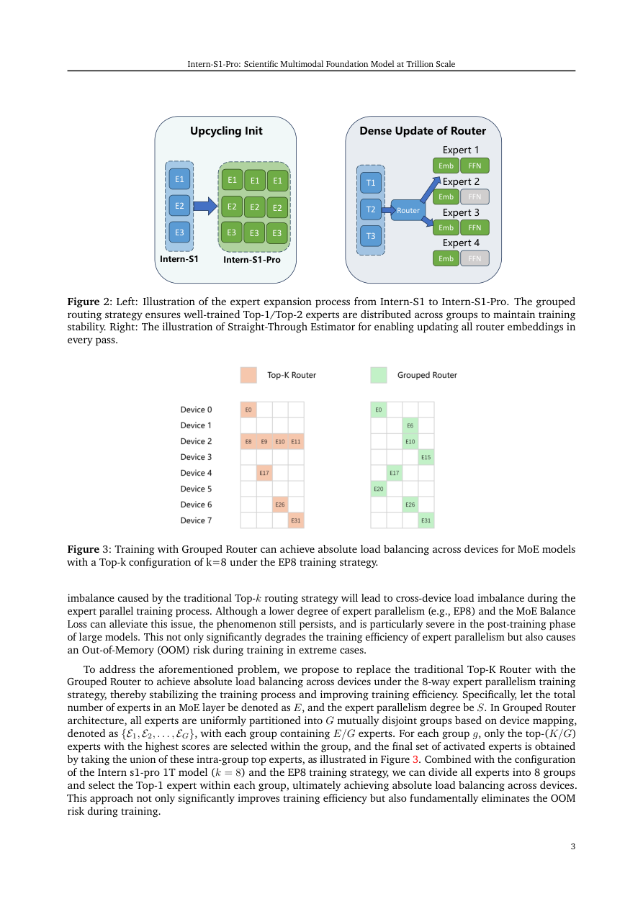

#1
★ 9/10
Intern-S1-Pro: Scientific Multimodal Foundation Model at Trillion Scale
Intern-S1-Pro：万亿参数级科学多模态基础模型

图 Figure · Page 3 of paper
🎯 首个万亿参数科学多模态基础模型，覆盖百余项专业科学任务。
First trillion-parameter multimodal foundation model mastering 100+ specialized scientific tasks.
| 维度 | 中文 | English |
|---|---|---|
| ❓ 待解决 的问题 |
现有多模态大模型很难同时在通用推理和化学、材料、生命科学、地球科学等深度专业科学任务上表现出色。将模型扩展到万亿参数规模，对训练效率和训练与推理之间的精度一致性提出了巨大工程挑战。此前没有任何开源模型能在如此规模下兼顾通用能力与科学深度。 | Existing multimodal foundation models struggle to simultaneously excel at both general-purpose reasoning and deep, domain-specific scientific tasks such as chemistry, materials science, life sciences, and earth sciences. Scaling to trillion parameters introduces enormous engineering challenges in training efficiency and maintaining precision consistency between training and inference. No open-source model has previously achieved this combination of scale and scientific breadth. |
| 💡 解决 的亮点 |
• 首个开源万亿参数多模态模型，打破科学AI的规模天花板。 • "可专业化的通才"设计理念：在100余项通用与专业科学任务上均表现出色。 • 万亿参数规模下集成高级智能体能力，支持工具调用与多步骤科学推理。 • 依托XTuner与LMDeploy基础设施，实现高效的万亿参数RL训练，并严格保证训练与推理的精度一致性。 | • First open-source trillion-parameter multimodal model, breaking the scale barrier for scientific AI. • "Specializable Generalist" design: the model excels at both broad general tasks and deep scientific specialization across 100+ tasks. • Advanced agent capabilities integrated at trillion-scale, enabling tool use and multi-step scientific reasoning. • Powered by XTuner + LMDeploy infrastructure enabling efficient RL training at 1T parameters with strict train-inference precision alignment. |
| 🧪 实验 内容 |
模型在涵盖通用多模态能力（图文理解、通用推理）和专业科学领域（化学、材料科学、生命科学、地球科学）的大量基准上进行评估。基线包括领先的开源模型和专有/闭源模型。评估指标为100余项科学子任务的特定任务准确率与性能分数，同时包含智能体能力基准，评估多步骤工具调用与推理表现。 | The model was evaluated on a wide range of benchmarks covering both general multimodal capabilities (image-text understanding, general reasoning) and specialized scientific domains (chemistry, materials science, life sciences, earth sciences). Baselines include leading open-source models as well as proprietary/closed-source models. Evaluation metrics are task-specific accuracy and performance scores across 100+ scientific sub-tasks. Agent capability benchmarks were also included to assess multi-step tool-use and reasoning performance. |
| 📊 实验 结果 |
Intern-S1-Pro在通用多模态基准上跻身开源模型顶级行列，与领先闭源模型竞争力相当。在化学、材料、生命科学、地球科学等100余项专业科学任务上超越专有模型，树立科学深度新标杆。摘要中未披露具体基准名称和数值分数，但论文声称在通用任务上达到开源顶级水平，在科学基准上优于专有模型。 | Intern-S1-Pro ranks in the top tier of open-source models on general multimodal benchmarks, demonstrating competitive performance with leading closed-source models. On specialized scientific tasks spanning chemistry, materials, life sciences, and earth sciences (100+ tasks), it outperforms proprietary models, establishing a new state-of-the-art for scientific depth. Specific benchmark names and numerical scores are not disclosed in the abstract, but the paper claims top-tier open-source rankings for general tasks and superiority over proprietary models on scientific benchmarks. |
| 🏁 结论 | Intern-S1-Pro证明，借助专项RL训练基础设施将多模态模型扩展至万亿参数，可使单一模型同时在通用能力上领跑开源排行榜，并在专业科学领域超越专有模型。本研究验证了"可专业化的通才"范式是实现通用与科学AI统一的可行路径。 | Intern-S1-Pro demonstrates that scaling a multimodal model to one trillion parameters with targeted RL training infrastructure enables a single model to simultaneously lead open-source rankings in general capabilities and surpass proprietary models in specialized scientific domains. This work validates the "Specializable Generalist" paradigm as a viable path toward unified general and scientific AI. |
| 🔗 论文 链接 |
arXiv: 2603.25040v1 · 📥 PDF | |
⚙️ Method · 方法详解
Intern-S1-Pro通过两大基础设施组件将多模态基础模型扩展至万亿参数：XTuner负责高效的分布式强化学习训练，LMDeploy负责保证推理与训练精度严格一致。模型被训练掌握化学、材料科学、生命科学、地球科学等领域100余项专业科学任务，同时保持强大的通用图文理解与推理能力。高级智能体能力被整合进架构，使模型能够调用工具并进行复杂的多步骤推理。这一设计理念被称为"可专业化的通才"，在通用智能的广度与科学专长的深度之间取得平衡。
Intern-S1-Pro scales a multimodal foundation model to one trillion parameters by leveraging two robust infrastructure components: XTuner for highly efficient distributed Reinforcement Learning training at trillion-parameter scale, and LMDeploy for inference with strict precision consistency relative to training. The model is trained to master over 100 specialized scientific tasks spanning chemistry, materials science, life sciences, and earth sciences, while retaining strong general image-text understanding and reasoning. Advanced agent capabilities are woven into the architecture, enabling the model to use tools and perform complex multi-step reasoning. This design philosophy — called "Specializable Generalist" — balances breadth of general intelligence with depth of scientific expertise.
🌟 Why It Matters · 为什么重要
这是开源科学AI领域的里程碑成果，证明在万亿参数规模下通用大模型与领域专家模型之间的差距可以弥合。对于ML/RL/机器人研究者而言，本文展示了基于RL的训练基础设施（XTuner + LMDeploy）能够可靠地扩展至万亿参数并保证精度一致性，是社区重要的工程里程碑。
This is a landmark result for open-source scientific AI, showing that the gap between general-purpose LLMs and domain-expert models can be closed at trillion-parameter scale. For ML/RL/Robotics researchers, it demonstrates that RL-based training infrastructure (XTuner + LMDeploy) can scale reliably to 1T parameters with precision guarantees — a key engineering milestone for the community.